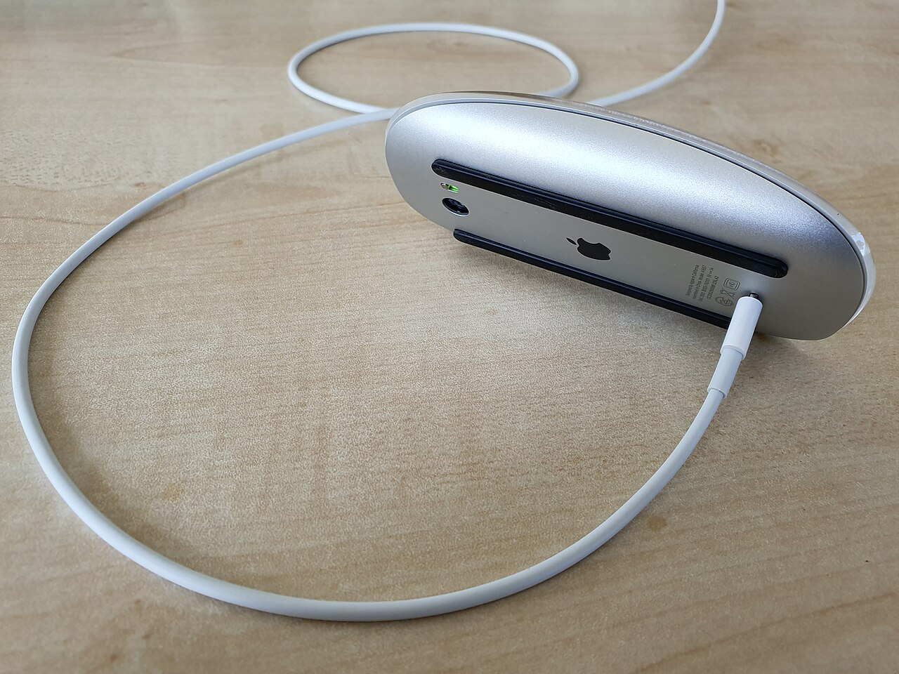

Magic Tray · drivers
Which Windows driver do I need?
There is no single Apple mouse INF that is correct for every Magic device. Identify the PID you have. Magic Tray will not silently rebind.
- How to tell which Magic device you haveHardware Ids first, then AA door / Lightning / USB-C
- Magic Mouse 2024 / v3 (USB-C)PID 0323 · KMDF · Test Mode until we get attestation
- Magic Mouse v1, v2, or Apple Wireless MousePID 030D / 0269 / 0310 · Boot Camp · no Test Mode
- Magic Keyboard / Apple Wireless KeyboardNo .sys · SDP patch · -Mac required
- Magic TrackpadNo driver from us · battery only
How to tell which Magic device you have
The physical port is a hint. Hardware Ids are the authority. Two mice can look similar; PID_0323 and PID_0269 are not the same Windows device.
1. Read Hardware Ids in Device Manager
- Open Device Manager.
- Find the HID or Bluetooth Apple device (Mice and other pointing devices, Keyboards, or Bluetooth).
- Properties → Details → Hardware Ids.
- Look for
PID_0323orPID&0323(same pattern for030D,0269,0310, and the rest). USB HID isVID_05AC&PID_xxxx. Bluetooth rows usePID&xxxx.
If the PID is not in KnownMice or KnownKeyboards, do not guess a driver. File a missing-device issue.
2. Then look at the bottom of the device
Flip it. The charging port — or the AA door if there is no port — matches the generation:
- AA door, no port — Mouse v1 (
030D), Apple Wireless Mouse (0310), Trackpad 1 (030E), 2011 keyboard. - Lightning on the bottom — Mouse v2 (
0269), Trackpad 2 (0265), Lightning keyboards. - USB-C oval — Mouse 2024 (
0323), Trackpad 2024 (0324), 2024 keyboards.
Mice

v2 photo: Syced, Wikimedia Commons, CC0. AA and USB-C are schematic bottom views — not product shots.
{kind=link}
Trackpads
Keyboards
0239 / 023A / 023B · 2011 · AA
Apple Wireless Keyboard A1314
AA door. Also 0255 / 0256 / 0257 (ANSI/ISO/JIS).
024F · Lightning
Magic Keyboard A1644
Lightning. Related PIDs 0250, 0267, 026C, 029C, 029A, 029F.
0320 / 0321 / 0322 · 2024 · USB-C
Magic Keyboard 2024
USB-C. 0321 Touch ID, 0322 numeric keypad — extra PIDs, same SDP path.
Touch ID (0267, 026C, 029A, 0321) and numeric keypad (029F, 0322) are extra PIDs, not extra drivers. Same keyboard SDP patch.
Magic Mouse 2024 / v3 — 0323
KMDF from magic-mouse-v3-windows-fix — only path we recommend for scroll and battery. Why the 2024 mouse is not v2: diagrams. Why Test Mode: signing.
Working
Broken
KMDF is the filter that keeps the two rooms apart. The sandwich picture is sbagirici’s.
sbagirici · v1 / v2
Same sandwich · v3
| Choice | Scroll | Battery | Test Mode |
|---|---|---|---|
| KMDF | Yes | Yes | Required today |
| Patched Apple | One or the other, not both | Required | |
| Stock HidBth | Usually no | Often yes | No |
bcdedit /set testsigning on, Memory integrity off, reboot.- Tray: confirm KMDF (
Install-KMDF.cmd). No fallback to patched Apple. - Still no scroll → unpair / re-pair.
v1 / v2 / Apple Wireless Mouse
tealtadpole Boot Camp INF. Catalog-signed. Do not install v3 KMDF on these PIDs.
| Device | PID | Power | Path |
|---|---|---|---|
| Magic Mouse v1 | 030D | AA door | Boot Camp |
| Magic Mouse v2 | 0269 | Lightning | Boot Camp |
| Apple Wireless Mouse | 0310 | AA door | Boot Camp |
Keyboards
SDP registry patch, not a kernel driver. Install-KeyboardBattery.cmd -Mac … from the Release. Re-pairing wipes it.
| Generation | PIDs | Power |
|---|---|---|
| 2011 A1314 | 0239 023A 023B 0255 0256 0257 | AA |
| Lightning (A1644 and later) | 024F 0250 0267 026C 029C 029A 029F | Lightning |
| 2024 | 0320 0321 0322 | USB-C |
Trackpads
Battery and alerts only. No tap / 3-finger / KMDF. PIDs: 030E (AA), 0265 (Lightning), 0324 (USB-C).